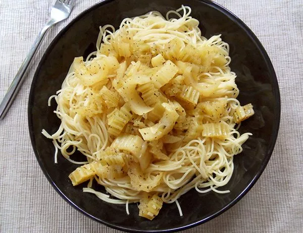

Lasagna Recipe
Description
A comforting Italian dish made with rich tomato sauce, garlic, and herbs. Simple, flavorful, and ready in minutes.
Ingridients
- 200 g spaghetti
- 2 tablespoons olive oil
- 2 cloves garlic, minced
- 1 can (400 g) crushed tomatoes
- 1 teaspoon dried basil
- Salt and pepper to taste
- Grated Parmesan (optional)
Instructions
- Cook spaghetti in salted boiling water until al dente.
- In a pan, heat olive oil and sauté garlic for 30 seconds.
- Add crushed tomatoes, basil, salt, and pepper.
- Simmer for 10–15 minutes.
- Drain spaghetti and add it to the sauce.
- Toss well and cook for another minute.
- Serve hot with grated Parmesan if desired.